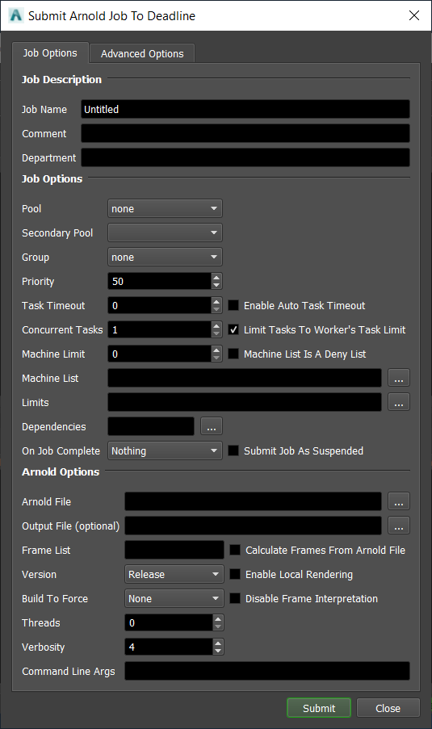
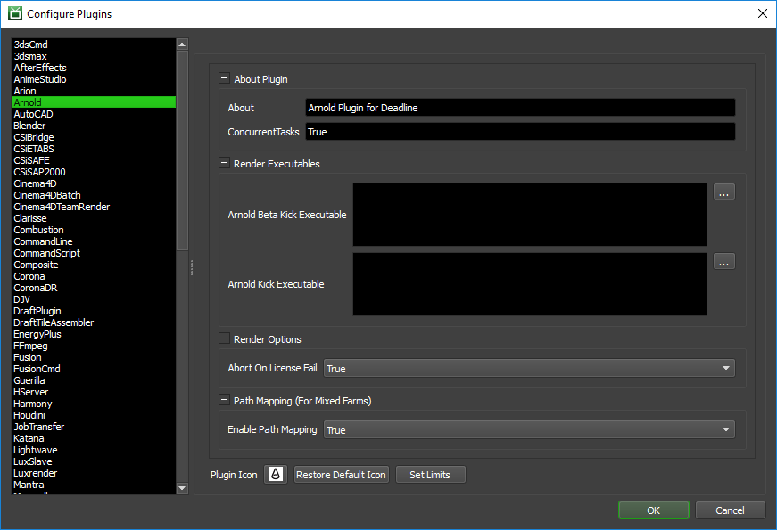

Arnold Standalone¶
Job Submission¶
You can submit Arnold Standalone jobs from the Monitor or via an in-app submitter such as MayaBatch as an export job.
Setup your Arnold Files¶
Before you can submit an Arnold Standalone job, you must export your scene into .ass files.
The general Deadline options are explained in the Job Submission documentation, and the Draft/Integration options are explained in the Draft and Integration documentation. The Arnold specific options are:
- Arnold File: The Arnold file(s) to be rendered.
If you are submitting a sequence of .ass files, select one of the numbered frames in the sequence, and the frame range will automatically be detected if Calculate Frames From Arnold File is enabled. The frames you choose to render should correspond to the numbers in the .ass files.
Output File: The output file. If left blank, Arnold will save the output to the location defined in the .ass file.
Version: Choose the Beta or Release version of Arnold to render with (these can be configured in the Arnold plugin configuration).
Threads: The number of threads to use for rendering.
Verbosity: The verbosity level for the render output.
Enable Local Rendering: If enabled, Deadline will render the frames locally before copying them over to the final network location.
Command Line Args: Specify additional command line arguments you would like to pass to the Arnold renderer.
Additional Plugin Folders: Specify up to three additional plugin folders that Arnold should use when rendering.
Plugin Configuration¶
You can configure the Arnold plugin settings from the Monitor. While in power user mode, select Tools -> Configure Plugins and select the Arnold plugin from the list on the left.
Render Executables
Arnold Kick Executable: The path to the Arnold kick executable file used for rendering. Enter alternative paths on separate lines. Different executable paths can be configured for each version installed on your render nodes.
Render Options
Abort On License Fail: If Arnold cannot get a license and this option is enabled, the rendering job will fail. If disabled, the job will still render but with a watermark.
Path Mapping (For Mixed Farms)
Enable Path Mapping: If enabled, a temporary Arnold scene source (.ass) file will be created locally on the Worker for rendering because Deadline does the path mapping directly in the Arnold scene source file. This feature can be turned off if there are no Path Mapping entries defined in the Repository Options.
CPU Affinity
Limit Threads To CPU Affinity: If enabled, the number of render threads will be limited to the CPU affinity of the rendering Worker.
FAQ¶
Can I submit a sequence of Arnold .ass files that each contain one frame?
Yes, this is supported.
When rendering my Workers are ignoring the CPU Affinity.*
Some renderers modify the CPU affinity when a render starts. In these cases you can enable the Plugin Configuration option “Limit Threads To CPU Affinity” which will limit the number of threads the renderer can use.
Error Messages and Meanings¶
This is a collection of known Arnold error messages and their meanings, as well as possible solutions. We want to keep this list as up to date as possible, so if you run into an error message that isn’t listed here, please visit the Thinkbox Help Centre and let us know.
ERROR | [driver_exr] defaultArnoldDriver@driver_exr.RGBA: can’t create file “.exr”: OpenEXR exception: Permission denied.
This error means that Arnold could not find the path to the output location.

{kind=link}
{kind=link}